High precision hydraulic excavator control for heavy-duty grading
RSS 2026
한줄 요약 — 하중에 따라 유량 응답이 달라지는 NFC에는 압력 적응형 2차원 LUT를, LS에는 단순 유량-밸브 LUT를 두고 공통 MPC와 결합함으로써, 최대 40 cm 절삭의 중부하 정지작업을 두 유압 굴착기에서 2 cm 미만 오차로 수행한 범용 retrofit 제어 스택이다.
1.연구 배경 및 동기
깊은 절삭과 센티미터 정밀도를 동시에 요구하는 정지작업
Heavy-duty grading은 단순히 표면을 살짝 다듬는 작업이 아니라 한 번의 스트로크 안에 버킷이 찰 만큼 재료를 제거하면서도 버킷 날을 목표 평면에 붙여야 하는 작업이다. 토양 반력은 절삭 깊이와 위치에 따라 크게 변하고, 유압 구동은 밸브 입력에 즉각적이고 강체적으로 반응하지 않으므로 숙련 운전자의 장비별 경험이 정밀도와 생산성을 좌우한다.
상용 반자동 정지 시스템과 기존 IK·PI·contouring 제어는 가벼운 절삭이나 공중 궤적에서는 유용하지만, 깊은 절삭에서는 목표 깊이에 도달하기 전에 멈추거나 초기 overshoot와 말단 편차를 보인다. 특히 동일한 밸브 명령도 Load Sensing(LS)과 Negative Flow Control(NFC)에서 전혀 다른 하중 의존성을 보여, 한 장비에서 식별한 역모델을 다른 장비에 옮기기 어렵다.
논문은 이 차이를 고수준 경로 추종기의 문제가 아니라 저수준 유압 인터페이스의 문제로 분리한다. 사용자는 목표 높이·경사와 버킷 끝 속도만 주고, 장비별 유압 모델과 PID가 목표 관절속도를 재현하며, 그 위의 비선형 MPC는 동일한 비용함수와 제약으로 설계면을 추종한다. 이 분리는 서로 다른 중량과 유압 회로에서도 같은 정지 알고리즘을 재사용하게 한다.
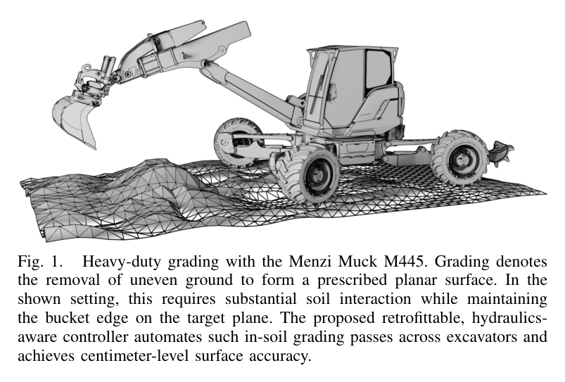
원문 Figure 1 · PDF p.1 — Fig. 1. Heavy-duty grading with the Menzi Muck M445. Grading denotes the removal of uneven ground to form a prescribed planar surface. In the shown setting, this requires substantial soil interaction while maintaining the bucket edge on the target plane. The proposed retrofittable, hydraulics- aware controller automates such in-soil grading passes across excavators and achieves centimeter-level surface accuracy.
선행 연구의 한계
기존 IK·PI 또는 contouring 방식은 토양 하중에 따른 관절 응답 변화를 명시적으로 모델링하지 않아 깊은 절삭에서 정확도가 저하된다.
학습 역모델과 데이터 기반 MPC는 수 시간의 장비별 데이터나 특정 시뮬레이터·유압 구조를 요구해 짧은 현장 retrofit에 불리하다.
상용 시스템의 내부 유압 제어는 공개되지 않으며 실험에서는 최대 기능 압력 350 bar에 훨씬 못 미친 채 약 5 m 부근에서 조기 정지했다.
선행 실차 결과 다수는 경절삭 또는 공중 속도 추종에 한정되어, LS와 NFC 모두에서 중부하·2 cm 이하 정밀도를 보인 사례가 없었다.
이 연구의 기여
LS와 NFC를 모두 다루는 유압 인지형 저수준 속도제어와 장비 독립 경로추종 MPC의 계층 분리 구조를 제안한다.
NFC의 부드럽고 하중 의존적인 응답을 압력 제어 루프와 가변 오리피스 저항으로 근사해 역변환 가능한 2차원 LUT를 구성한다.
분해나 제조사 내부 신호 없이 온보드 압력·관절 상태와 기구학만으로 약 20분에 끝나는 1회성 보정 절차를 제시한다.
11.5 t LS M445와 25 t NFC CASE250에서 최대 40 cm 절삭을 검증하고, 동일 CASE250 상용 시스템 대비 RMSE를 4.7 cm에서 1.8 cm로 낮춘다.
2.방법론 및 시스템 구성
제어기는 설계면 높이와 경사, 목표 말단 속도를 입력받는다. 10 Hz 비선형 MPC가 boom·stick·bucket의 목표 관절속도를 만들고, 관절 기구학이 이를 실린더 속도로 바꾼다. 각 관절의 feed-forward 유압 모델과 병렬 PID가 밸브 또는 pilot-stage 전류를 계산해 굴착기에 전달한다.
LS에서는 펌프가 DCV 압력강하를 거의 일정하게 유지하므로 목표 유량과 밸브 명령의 1차원 LUT면 충분하다. NFC에서는 펌프 설정압과 기능측 배압의 차이가 실제 유량을 결정하므로, 측정 압력에서 관성력을 제거한 pseudo back pressure와 목표 유량을 함께 입력으로 쓰는 2차원 LUT가 필요하다.
MPC는 저수준 폐루프와 장비의 과도응답을 관절별 2차 시스템과 dead time으로 식별한다. 예측된 말단 위치·속도·pitch를 이용해 전진속도, 수직속도, pitch rate, 목표 평면 높이, 명령 변화량을 비용으로 구성하고 관절 위치·속도 한계를 직접 제약한다.
처리 파이프라인
1
설계면과 작업속도 입력
상위 계획기 또는 사용자가 목표 높이 h*, 경사 α*, 버킷 날의 진행속도 v*x를 제공한다. 제어는 단일 grading pass가 이동 끝 또는 최대 기능 압력 stall에 이를 때까지 계속된다.
2
장비별 유압 feed-forward 보정
LS는 -0.85부터 0.85까지 0.1 간격의 밸브 명령에서 3초째 정상속도를 표본화해 선형 보간 LUT를 만든다. NFC는 stick·bucket의 단계적 stall과 boom의 empty·curled·full 자세를 이용해 하중별 유량 응답을 식별한다.
3
NFC 압력 적응 역모델
실린더 양측 압력으로 힘을 구하고 관성 성분을 빼 pseudo back pressure를 계산한다. 밸브 명령별 펌프 압력 LUT와 오리피스 저항 곡선을 결합한 뒤 역변환하여 목표 유량·현재 배압에서 밸브 명령을 찾는다.
4
PID와 과도응답 식별
feed-forward가 주 명령을 담당하고 PID가 flow sharing, pump boost, recuperation 등 남은 오차를 보상한다. 저수준 폐루프의 step response로 gain, damping ratio, natural frequency, dead time을 관절별로 식별한다.
5
제약식 비선형 MPC
Δt=0.1 s, horizon N=20에서 forward kinematics를 반복 평가한다. 수평 진행, 목표 높이·경사, 버킷 pitch, 부드러운 명령을 함께 최적화하고 관절 위치와 속도 한계를 만족하는 첫 명령만 실행한다.
6
정지 pass와 표면 검증
약 0.5 m/s의 버킷 날 속도로 깊이가 다른 절삭을 반복하고, proprioceptive 궤적 오차와 Leica MS60 레이저 스캔의 최종 표면 오차를 분리해 평가한다.
속도 v_i와 가속도 a_i에 gain K_i, 감쇠비 ζ_i, 고유진동수 ω_n,i, dead time τ_i를 두어 저수준 제어기와 유압 장비의 과도응답을 MPC 안에서 예측한다.
NFC 기능측 pseudo back pressure
P_f=(f_m-f_{inertia})/A_{articulation}
압력으로 측정한 실린더 힘에서 관성력을 제거하고 유효 면적으로 나눠, 외부 하중이 밸브 유량에 미치는 배압을 나타낸다.
가변 오리피스 저항 모델
R(x)=\frac{a}{b(x+c)^2},\qquad \Delta P=R\,Q^2
NFC DCV 명령 x에 따른 lumped resistance를 fit하고 펌프압과 배압 차에서 유량 Q를 계산하여 2차원 역 LUT를 만든다.
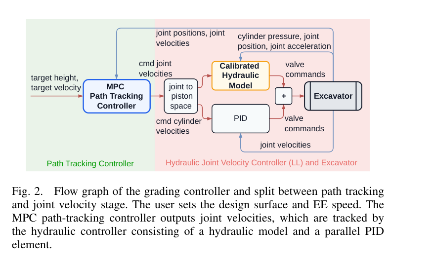
원문 Figure 2 · PDF p.3 — Fig. 2. Flow graph of the grading controller and split between path tracking and joint velocity stage. The user sets the design surface and EE speed. The MPC path-tracking controller outputs joint velocities, which are tracked by the hydraulic controller consisting of a hydraulic model and a parallel PID element.
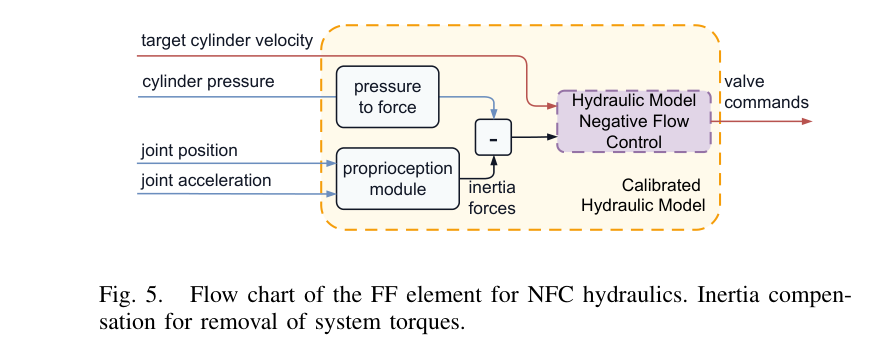
원문 Figure 5 · PDF p.6 — Fig. 5. Flow chart of the FF element for NFC hydraulics. Inertia compen- sation for removal of system torques.
3.핵심 기술
유압 구조별 최소 모델과 공통 인터페이스
장비 일반화의 핵심은 모든 유압기를 하나의 복잡한 물리모델로 설명하는 것이 아니라, LS와 NFC 각각에 필요한 최소 보정만 저수준에서 수행하는 데 있다. LS의 stiff response는 1차원 LUT로, NFC의 load-dependent softness는 배압을 포함한 2차원 LUT로 바뀌며 상위 MPC에는 동일한 관절속도 인터페이스가 노출된다.
LS: 목표 실린더 유량→밸브 명령 1D LUT
NFC: 목표 유량·pseudo back pressure→밸브 명령 2D LUT
병렬 PID가 미모델링 coupling과 외란을 보상
관성 보상형 NFC calibration
순간 가속이 압력에 만든 힘을 실제 외부 하중으로 오인하면 feed-forward가 더 큰 명령을 내는 양의 피드백이 생긴다. 논문은 관절 위치·가속도와 식별된 동역학으로 관성력을 먼저 제거한 뒤 배압을 추정하여 이 불안정을 막는다.
Stick과 Bucket은 같은 밸브 개도에서 지면에 점진적으로 stall시켜 유량-압력 곡선을 얻고, Boom은 progressive stall이 어려워 세 가지 하중 자세를 사용한다. 작은 저항 영역의 정확도를 유지하도록 로그 비용으로 오리피스 파라미터를 fitting한다.
분해 없이 압력·관절 상태만 사용
방향별 회로가 달라 각 작동방향을 별도 식별
보정은 관절별 순차 수행하며 전체 약 20분
말단 작업목표를 직접 다루는 MPC
MPC는 단순 관절 위치 추종 대신 예측 기구학에서 버킷 날의 수평속도, 수직속도, pitch rate와 설계면 높이 오차를 계산한다. dead-time input buffer와 2차 과도모델은 시작부 overshoot를 억제하며, 입력 변화 페널티는 유압 루프를 자극하는 급격한 관절속도 명령을 줄인다.
10 Hz 재계획, 20-step horizon
joint-rate와 joint-position constraint
bucket joint를 쓰지 않을 때 상태 차원은 유지하고 해당 속도·가속도·입력을 0으로 고정
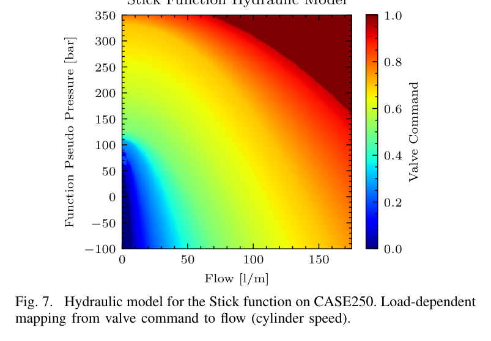
원문 Figure 7 · PDF p.7 — Fig. 7. Hydraulic model for the Stick function on CASE250. Load-dependent mapping from valve command to flow (cylinder speed).
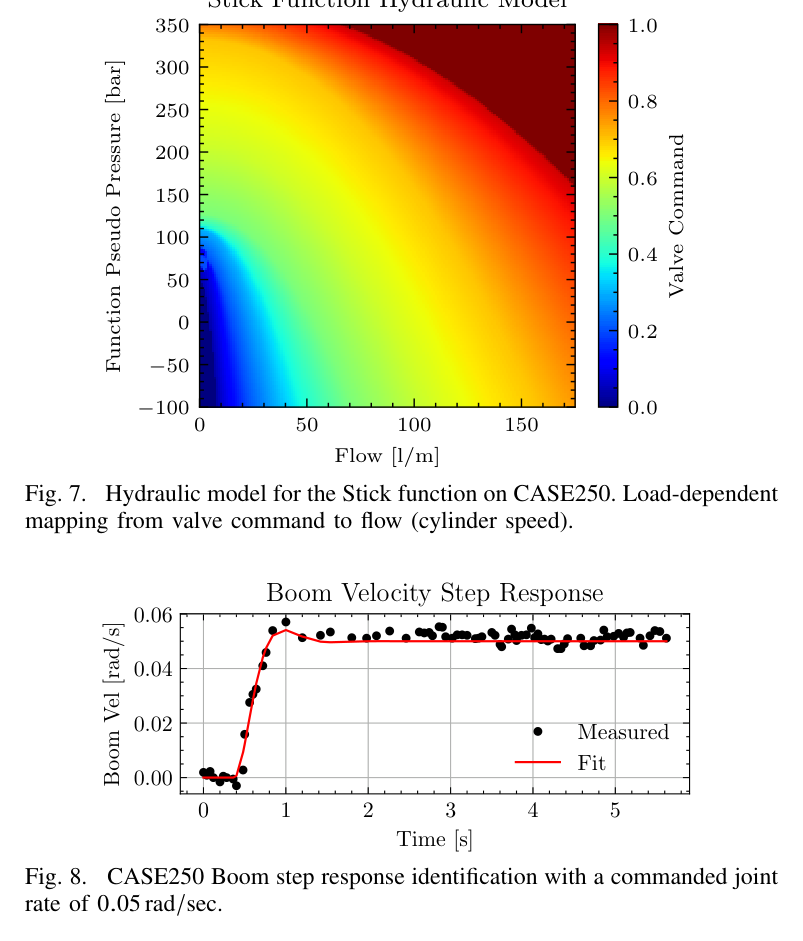
원문 Figure 8 · PDF p.7 — Fig. 8. CASE250 Boom step response identification with a commanded joint rate of 0.05 rad/sec.
4.실험 결과
실험 환경·장비·데이터
LS 플랫폼은 11.5 t Menzi Muck M445(105 kW, 0.54 m³ 버킷), NFC 플랫폼은 25 t CASE250(138 kW, 0.8 m³ 버킷)이다.
두 장비 모두 cabin-mounted computer에서 제어하며 Leica iCON Machine Control이 관성·관절 위치·속도를 제공한다. M445는 vendor remote CAN, CASE250은 Husco Exacto를 통해 밸브 명령을 받는다.
compact material에서 2~40 cm 깊이의 경절삭·중절삭·near-stall pass를 수행했고, 모든 CASE250 비교는 약 0.5 m/s blade speed를 사용했다.
최종 표면 평가는 Leica MS60 Multistation 고정 스캔으로 수행했다. 약 25 cm 깊이, 버킷 폭 네 배 영역을 20% 겹침의 다섯 pass로 좌우 방향 시공했다.
실험 프로토콜
먼저 payload가 다른 조건에서 feed-forward 단독 관절속도 추종을 확인하고, 이어 MPC까지 포함한 전체 정지 궤적을 각 장비에서 깊이별 10회 평가했다.
CASE250에서는 동일 장비·토양·속도에서 상용 반자동 controller와 제안법을 비교해 장비 차이를 제거했다.
접근 첫 1 m 이후의 목표면 대비 blade 높이를 경로 RMSE와 최대 편차로 집계하고, 별도 표면시험은 점군의 목표면 상대 높이와 oscillation을 비교했다.
비교 기준
동일 CASE250에 설치된 상용 state-of-the-art semi-automatic grading controller
관련연구 표의 IK+PI, contouring/observer, learned model inversion, data-driven MPC는 성능 맥락 비교에 사용되지만 동일 실험 재현 비교군은 아니다.
평가 지표
목표 평면 대비 blade path RMSE와 maximum deviation
최대 기능 압력 도달 여부 및 조기 stall 위치
Leica MS60 점군의 목표면 상대 높이·표면 평탄도
하중 변화에 따른 목표 관절속도 추종 오차
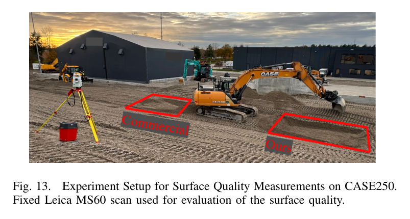
원문 Figure 13 · PDF p.8 — Fig. 13. Experiment Setup for Surface Quality Measurements on CASE250. Fixed Leica MS60 scan used for evaluation of the surface quality.
핵심 결과 해석
CASE250에서 상용 제어기는 접근부 이후 RMSE 4.7 cm, 최대 편차 17 cm였고 단단한 토양에서는 목표 깊이에 못 미치거나 약 5 m 지점에서 350 bar 최대압보다 낮은 압력으로 멈췄다. 제안법은 같은 조건에서 RMSE 1.8 cm, 최대 편차 5 cm를 기록하고 약 1 m 접근 뒤 목표 높이를 안정적으로 유지했다. 조기 정지가 발생한 경우에도 stick 압력이 실제 최대 기능 압력에 도달해 장비 torque envelope를 끝까지 사용했다.
LS M445에서도 깊이에 따른 정확도 저하 없이 RMSE 1.4 cm, 최대 편차 4 cm를 얻었다. 별도 CASE250 표면시험에서 상용법은 영역 중간에 이르러서야 목표 높이에 접근하고 10 cm가 넘는 진동을 보인 반면, 제안법은 더 일찍 목표면에 도달해 평탄하고 일관된 점군을 남겼다. 즉 개선은 공중 경로추종만이 아니라 실제 compacted soil의 최종 시공품질에서 확인됐다.
LS M445 feed-forward LUT는 서로 다른 하중에서 약 2% 관절속도 오차를 보였고, NFC CASE250은 배압 적응 항이 empty·curled·full payload에서 0.05 rad/s boom 목표속도를 유지했다. 전체 retrofit calibration은 약 20분이며, 두 중량급 장비와 서로 다른 유압 구조에서 동일한 상위 MPC를 유지했다.
정량 결과
평가 항목
정량 결과
조건·맥락
원문 근거
CASE250 제안법 path RMSE
1.8 cm
compact soil, 깊이가 다른 10회 pass, x=9 m 이후
PDF p.8
CASE250 상용법 path RMSE
4.7 cm
동일 장비·속도·토양, 10회 pass
PDF p.7
M445 제안법 path RMSE
1.4 cm
LS 장비, compact soil 10회 pass, x=5.2 m 이후
PDF p.8
정밀도 개선 배수
2.6×
CASE250에서 4.7 cm 대비 1.8 cm
PDF p.8
절삭 깊이 범위
2~40 cm
경절삭부터 near-stall 중부하 pass
PDF p.7
표면시험 pass 구성
5 passes, 약 20% overlap
약 25 cm 절삭, 버킷 폭 네 배 영역
PDF p.8
실패 사례와 경계조건
상용 제어기는 hard soil에서 목표 깊이에 도달하지 못하고 최대 기능 압력 전에 조기 stall했다.
상용 제어기의 light grading에는 초기 overshoot가, 장비 가까운 구간에는 버킷 날이 위로 밀리는 현상이 나타났다.
제안법도 토양 저항이 장비 한계를 넘으면 stall하지만, 이때는 실제 최대 기능 압력에 도달하며 임의의 낮은 한계에서 멈추지 않는다.
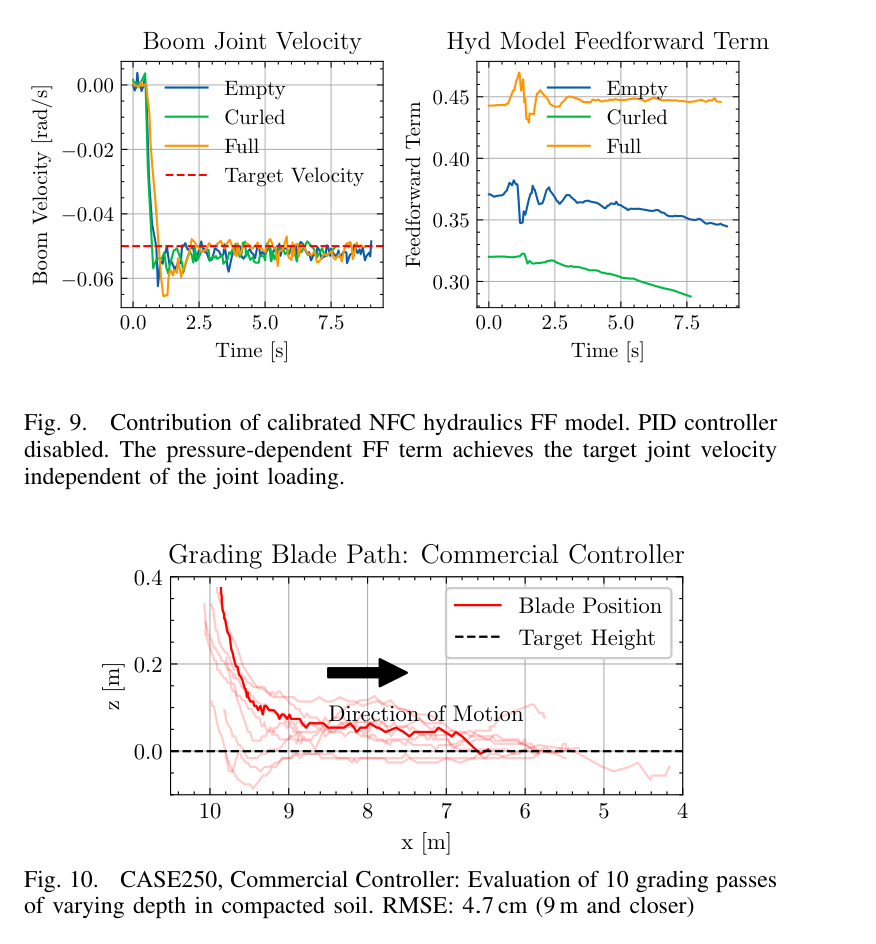
원문 Figure 10 · PDF p.7 — Fig. 10. CASE250, Commercial Controller: Evaluation of 10 grading passes of varying depth in compacted soil. RMSE: 4.7 cm (9 m and closer)
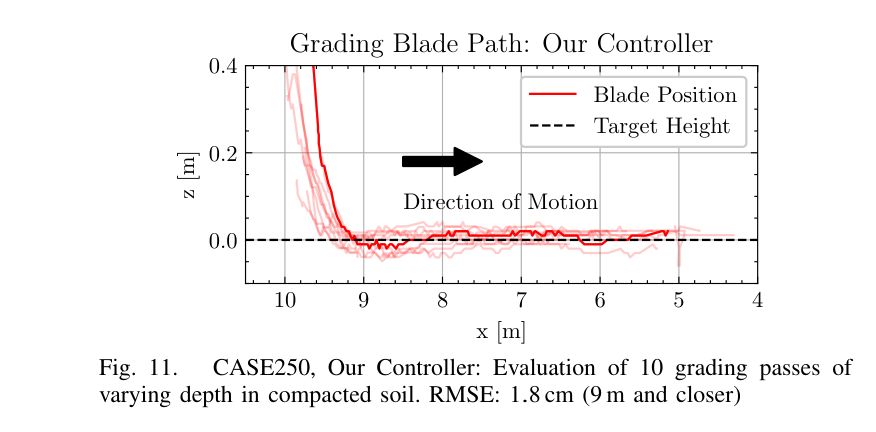
원문 Figure 11 · PDF p.8 — Fig. 11. CASE250, Our Controller: Evaluation of 10 grading passes of varying depth in compacted soil. RMSE: 1.8 cm (9 m and closer)
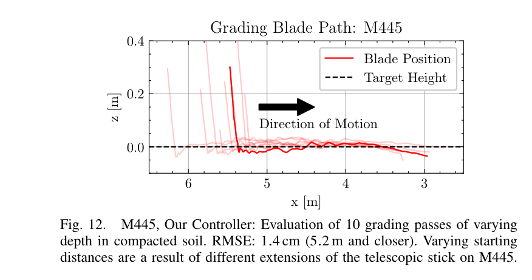
원문 Figure 12 · PDF p.8 — Fig. 12. M445, Our Controller: Evaluation of 10 grading passes of varying depth in compacted soil. RMSE: 1.4 cm (5.2 m and closer). Varying starting distances are a result of different extensions of the telescopic stick on M445.
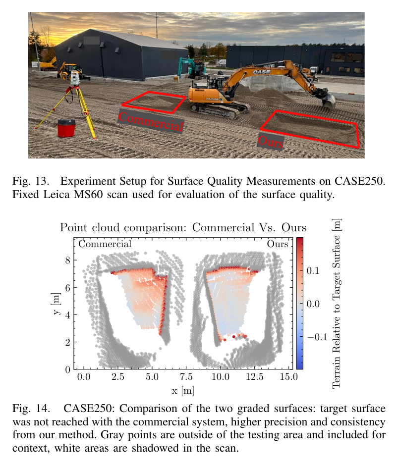
원문 Figure 14 · PDF p.8 — Fig. 14. CASE250: Comparison of the two graded surfaces: target surface was not reached with the commercial system, higher precision and consistency from our method. Gray points are outside of the testing area and included for context, white areas are shadowed in the scan.
5.한계 및 향후 연구
현재 한계
실험은 한 번의 평면 grading pass와 compacted material 중심이며 자유곡면·다중 패스의 온라인 갱신은 검증하지 않았다.
Positive Flow Control 장비는 사용할 수 없어 적용성을 평가하지 못했다.
관절 간 coupling은 목표 속도에서 PID로 보상 가능하다고 보고 MPC 모델에서 생략했으므로 더 빠른 복합동작에서는 오차가 커질 수 있다.
NFC는 방향별·관절별 calibration과 압력 센서 정확도에 의존하며, 장비마다 약 20분의 보정이 여전히 필요하다.
향후 연구
더 표현력 있는 비용함수로 평면이 아닌 임의 3D 형상과 곡면 추종을 확장한다.
말단 Cartesian force를 MPC 목적에 포함해 impedance 방식의 다짐과 토사 재분배를 수행한다.
기능 간 flow sharing과 coupling을 유압 모델에 포함해 더 빠른 속도에서도 정밀도를 유지한다.
힘·적재량 추정 및 설계면 측량을 결합해 절삭 깊이와 다음 pass를 폐루프로 재계획한다.
6.한마디로 정리
핵심 방법은?
유압 구조 차이는 장비별 FF+PID에서 흡수하고, 공통 비선형 MPC가 말단의 설계면·속도·자세를 제약식으로 추종한다.
핵심 결과는?
11.5 t LS와 25 t NFC에서 1.4·1.8 cm RMSE를 달성했고, 동일 CASE250 상용법 4.7 cm보다 2.6배 정밀했다.
한계는?
평면 단일 pass와 LS/NFC에 한정되며 PFC, 자유곡면, 고속 다기능 coupling과 폐루프 다중-pass 계획은 후속 과제다.
#제어·MPC#시스템통합·현장실증#유압별 저수준 속도제어#장비 독립 MPC#짧은 장비 보정
나의 의견 / 우리 연구와의 연관성
자율굴착 시스템에서 작업계획기가 좋은 버킷 경로를 만들어도 실제 유압기가 하중에 따라 다르게 움직이면 설계면 품질은 보장되지 않는다. 이 논문은 계획과 장비 사이에 명시적 관절속도 계약을 두어, 장비별 유압 보정과 작업공간 계획을 분리하는 실용적 인터페이스를 제공한다.
특히 최대 기능 압력까지 쓰면서도 cm급 높이를 유지한 결과는 벌크 굴착 뒤 finish grading을 같은 장비로 이어가는 데 중요하다. force/payload estimator와 결합하면 토질·적재량에 따라 속도와 절삭 깊이를 바꾸고, 레이저 또는 LiDAR 표면지도로 다음 pass를 재계획하는 폐루프 토공 시스템으로 확장할 수 있다.
전역 굴착계획기의 설계면·속도 명령을 서로 다른 굴착기 유압 구조에 공통으로 전달하는 실행 계층이 된다.
정지 중 압력과 경로 오차를 함께 기록하면 토양 강도와 장비 한계를 온라인 추정하는 작업 피드백으로 활용할 수 있다.
LiDAR/total-station 표면검사와 연결해 pass 종료→오차지도 갱신→다음 절삭 깊이 결정의 폐루프를 구성할 수 있다.
조기 stall을 피하고 전체 torque envelope를 사용하므로 같은 품질에 필요한 추가 pass와 작업시간을 줄일 가능성이 있다.
7.전체 그림·표
본문 핵심 위치에 배치하지 않은 원문 Figure와 Table을 원문 페이지 순서로 수록한다.
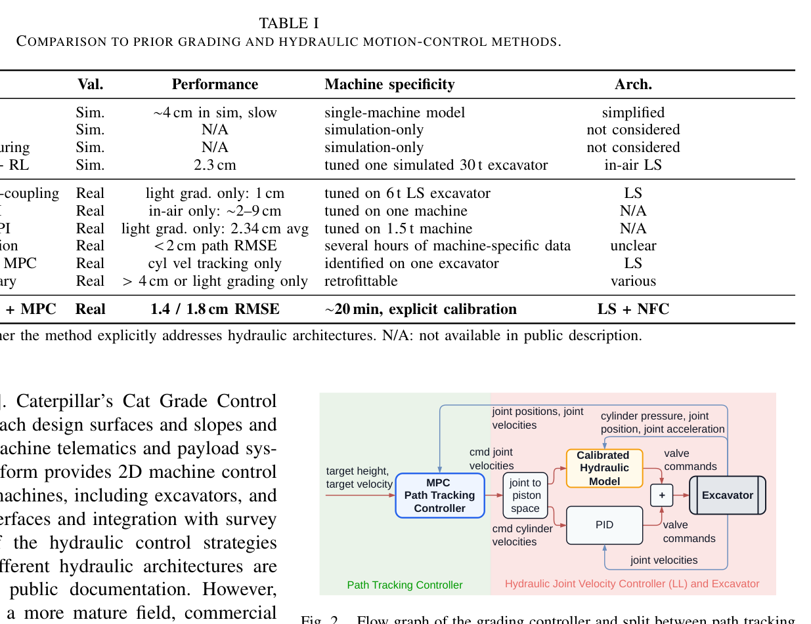
원문 Table I · PDF p.3 — TABLE I COMPARISON TO PRIOR GRADING AND HYDRAULIC MOTION-CONTROL METHODS.
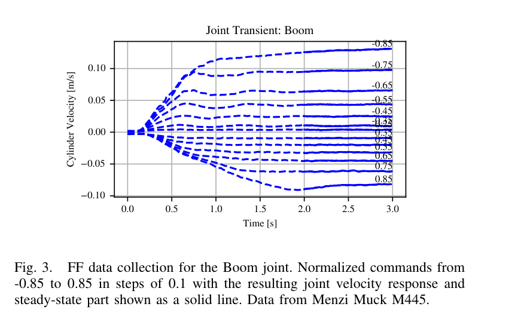
원문 Figure 3 · PDF p.5 — Fig. 3. FF data collection for the Boom joint. Normalized commands from -0.85 to 0.85 in steps of 0.1 with the resulting joint velocity response and steady-state part shown as a solid line. Data from Menzi Muck M445.
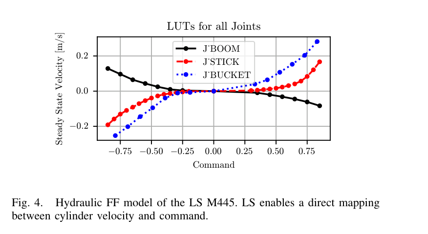
원문 Figure 4 · PDF p.5 — Fig. 4. Hydraulic FF model of the LS M445. LS enables a direct mapping between cylinder velocity and command.
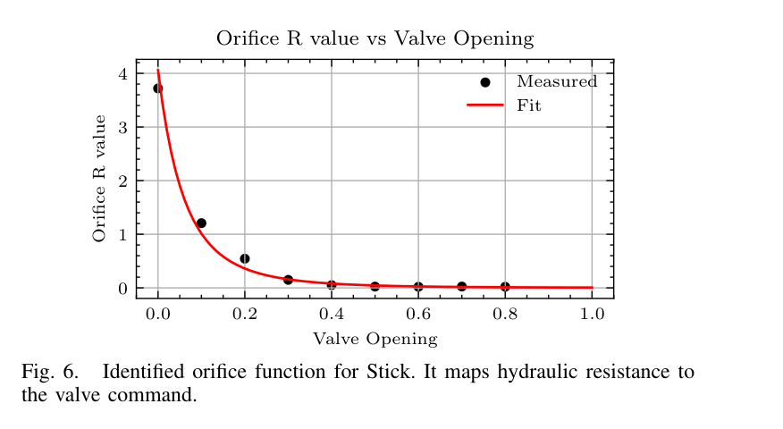
원문 Figure 6 · PDF p.6 — Fig. 6. Identified orifice function for Stick. It maps hydraulic resistance to the valve command.
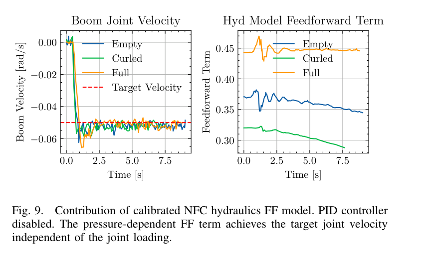
원문 Figure 9 · PDF p.7 — Fig. 9. Contribution of calibrated NFC hydraulics FF model. PID controller disabled. The pressure-dependent FF term achieves the target joint velocity independent of the joint loading.
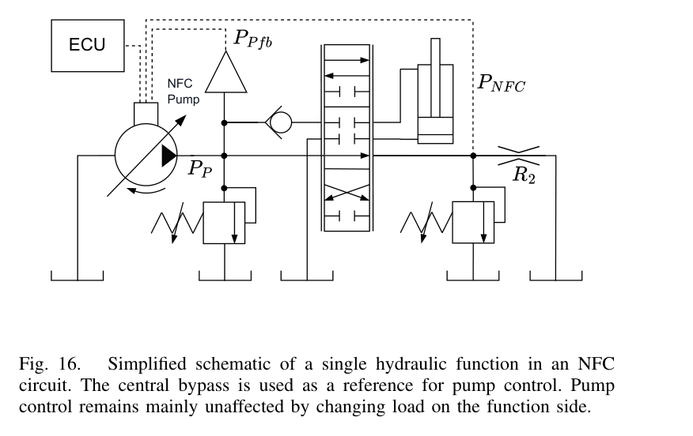
원문 Figure 16 · PDF p.11 — Fig. 16. Simplified schematic of a single hydraulic function in an NFC circuit. The central bypass is used as a reference for pump control. Pump control remains mainly unaffected by changing load on the function side.
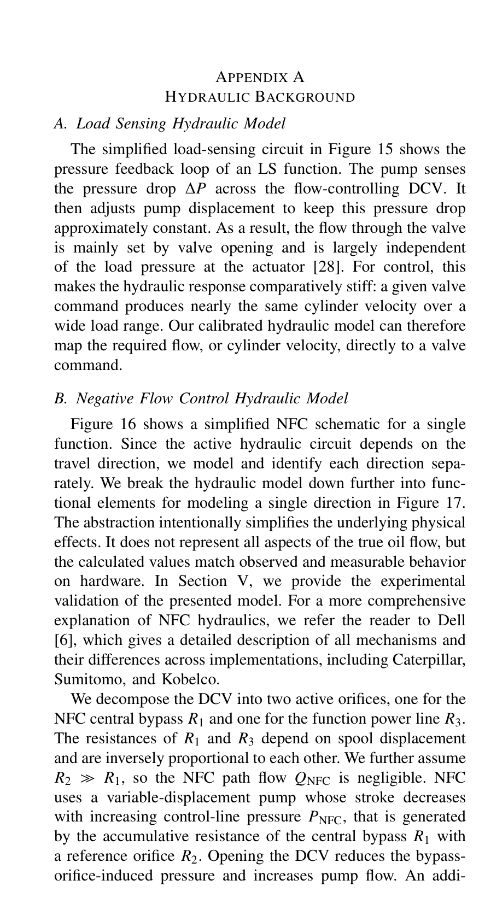
원문 Figure 16 · PDF p.11 — Figure 16 shows a simplified NFC schematic for a single function. Since the active hydraulic circuit depends on the travel direction, we model and identify each direction sepa- rately. We break the hydraulic model down further into func- tional elements for modeling a single direction in Figure 17. The abstraction intentionally simplifies the underlying physical effects. It does not represent all aspects of the true oil flow, but the calculated values match observed and measurable behavior on hardware. In Section V, we provide the experimental validation of the presented model. For a more comprehensive explanation of NFC hydraulics, we refer the reader to Dell [6], which gives a detailed description of all mechanisms and their differences across implementations, including Caterpillar, Sumitomo, and Kobelco. We decompose the DCV into two active orifices, one for the NFC central bypass 𝑅1 and one for the function power line 𝑅3. The resistances of 𝑅1 and 𝑅3 depend on spool displacement and are inversely proportional to each other. We further assume 𝑅2 ≫𝑅1, so the NFC path flow 𝑄NFC is negligible. NFC uses a variable-displacement pump whose stroke decreases with increasing control-line pressure 𝑃NFC, that is generated by the accumulative resistance of the central bypass 𝑅1 with a reference orifice 𝑅2. Opening the DCV reduces the bypass- orifice-induced pressure and increases pump flow. An addi-
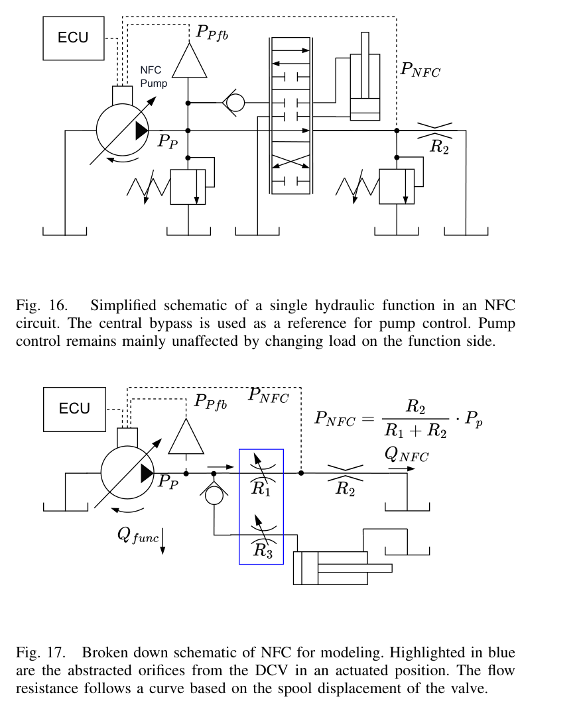
원문 Figure 17 · PDF p.11 — Fig. 17. Broken down schematic of NFC for modeling. Highlighted in blue are the abstracted orifices from the DCV in an actuated position. The flow resistance follows a curve based on the spool displacement of the valve.
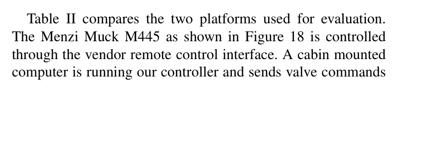
원문 Table II · PDF p.11 — Table II compares the two platforms used for evaluation. The Menzi Muck M445 as shown in Figure 18 is controlled through the vendor remote control interface. A cabin mounted computer is running our controller and sends valve commands
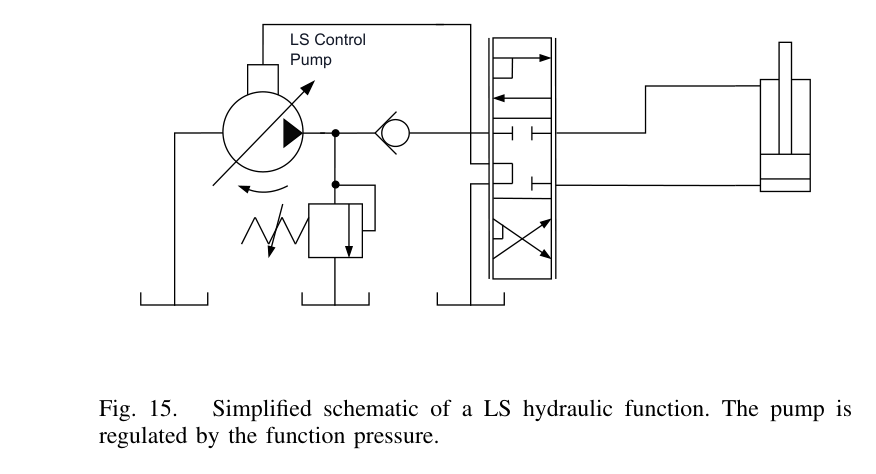
원문 Figure 15 · PDF p.11 — Fig. 15. Simplified schematic of a LS hydraulic function. The pump is regulated by the function pressure.